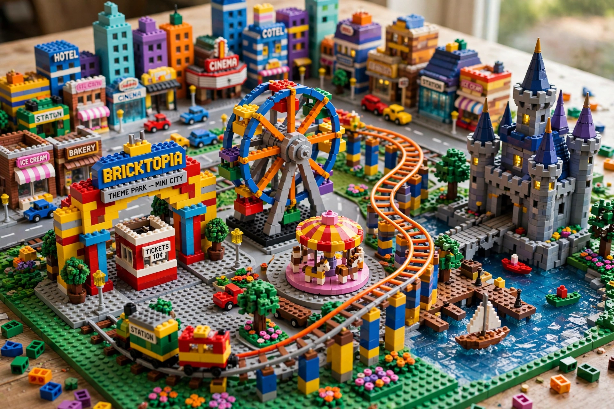

| Type | Theme park chain |
|---|---|
| Founded | 7 June 1968 (Billund) |
| Headquarters | Billund, Denmark |
| Owner | Merlin Entertainments / Blackstone / Kirkbi |
| Parent | Merlin Entertainments |
Legoland is a chain of family theme parks based on the Lego construction toy system produced by The Lego Group. The parks are aimed principally at families with children aged 2 to 12 and feature rides, shows and "Miniland" areas containing scale models of world landmarks built from millions of Lego bricks.
The first Legoland park opened in Billund, Denmark, in 1968, next to the original Lego factory. It was an immediate success, drawing hundreds of thousands of visitors in its first year. Additional parks followed at Windsor, England (1996), Günzburg, Germany (2002) and Carlsbad, California (1999). In 2005 the parks were sold to the Blackstone Group and merged into Merlin Entertainments, with the Lego family holding company Kirkbi retaining a stake. Later parks opened in Florida (2011), Malaysia (2012), Dubai (2016), Japan (2017), New York (2021) and several sites in China, alongside smaller Legoland Discovery Centres in cities worldwide.
Each park is organised into themed lands such as Knight's Kingdom, Pirate Shores, Lego City and Ninjago World. Signature attractions include driving schools where children earn a mock driving licence, fire-academy rides, and Miniland, whose models are built at scales around 1:20 by specialist model builders.